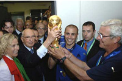

| Привет участникам соревнований! | |
| Виды спорта: |
Футбол Футбол (от англ. foot — ступня, ball — мяч) — командный вид спорта, в котором целью является забить мяч в ворота соперника ногами или другими частями тела (кроме рук) большее количество раз, чем команда соперника. В настоящее время самый популярный и массовый вид спорта в мире. Есть 17 официальных правил игры, каждое из которых содержит список оговорок и руководящих принципов . Эти правила предназначены для применения на всех уровнях футбола, хотя есть некоторые изменения для таких групп, как юниоры, взрослые, женщины и люди с ограниченными физическими возможностями. Законы очень часто формулировались в общих чертах, которые позволяют упростить их применения в зависимости от характера игры. Правила игры публикуются в ФИФА, но поддерживаются Международным советом футбольных ассоциаций (IFAB). |
| Виды спорта: | |
| Главное не победа, а участие! | |